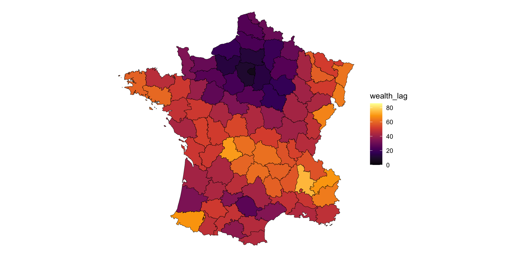
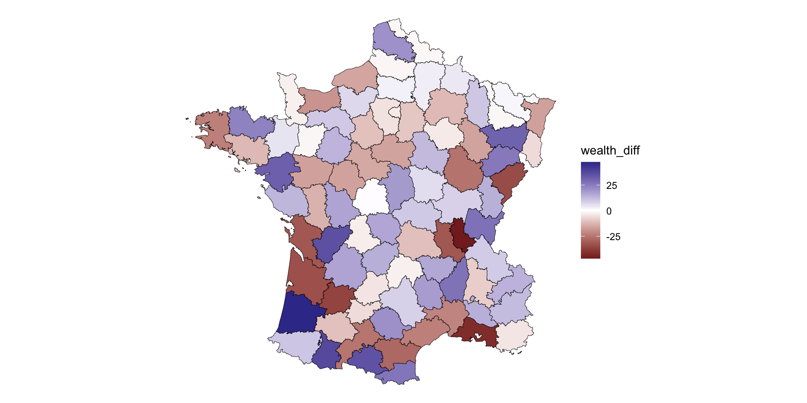

JHU talk (slides)
Hey everyone, my name is Josiah. Thank you all for having me. And thank you René for inviting me here to chat with you all. It excites me to see so many people being exposed to GIS and spatial analysis. I’m going to use my time to tell you all about my experience from undergraduate, graduate school, and where I am today. Then I’ll talk briefly about the spatial analysis
objectives
- tell you my story
- maybe inspire you to program
- a brief lesson on spatial analysis
- anything you want this is your time
I hope that you take away from this that your degree and the classes that you take do not dictate what field you have to go in. That your personal interests and studies are just as important, and if not sometimes more important, than what you learn in the classroom. Meaning, that while college classes are a wonderful introduction to subjects and fields nothing can compare with impassioned self-directed studying.
I want you to want to learn to program. I don’t want you to begrudgingly learn to program, I want you to want to program. Being even conversational in a programming langauge can pay compounding dividends.
i also want to discuss one brief but very important topic in spatial analysis.
and really this time is yours so you can tell me what you want from me and i can do my best to provide
A bit about myself
or, why should you actually listen to me
i typically avoid biographical slides in my talks but as I have free reign today. I want to tell you a bit about myself. My goal in doing so is to illustrate that it doesn’t really matter what your background is, spatial analysis is important and applicable to literally everyone and every domain
It’s a me
- MS in Urban Informatics, Northeastern
- Sr. Product Engineer @ Esri
- Spatial Statistics
- Previously @ RStudio (now Posit)
- Programming in R since 2014
So who am I and how am I qualified to tell you anything? I can tell you who I am but I don’t know if I’m qualified for anything!
I graduated with a degree in Urban informatics from NEU in April 2020. It was a really bad time but yet also very good time to finish a degree
I work at a company called Esri, we make the software known as ArcGIS. I work as a Sr. Product Engineer on the spatial statistics team. That means that I and a group of about 10 other people think deeply about what tools the “-ists” need to have at their disposal and how to make them intuitive, interpretable, and easy to use. By “ists” I mean the analysts, epidemiologists, biologists, criminologists, and what not.
Before that I worked at a company formerly called RStudio which is where I met René. I worked with government customers ensuring they could use RStudio professional products and bridge open source tools and enterprise products
humble beginnings

Unlike many of you here I was not, and still am not, very academically inclined. I went to a small school in Northern New Hampshire called Plymouth State University (PSU).
PSU is nationally recognized
but not in the way that most people want to be
While unknown to many, Plymouth State is actually a nationally recognized school.
“…this New Hampshire institution of higher learning is back. Four things students dig are skiing, skiing, studying and [partying] on the lake.
Playboy, 2010
recognized by playboy that is… this quote from playboy 2010 sort of gets to the heart of where I went to school. PSU wasn’t a really academic place. And people who go there aren’t typically ones who find themselves going to graduate school
So the fact I work in spatial stats of all things is wild.
finding geography
from anthropology & sociology to GIS
In college I actually initially studied anthropology and sociology. My interest had been in culture and social behavior. I loved getting in the weeds with social theories like symbolic interactionism, functionalism, conflict theory and all that. I eventually took an introduction to geography which is where I had first heard Tobler’s first law of geography
Tobler changed my perspective
“everything is related to everything else, but near things are more related than distant things.”
Waldo Tobler
Humanity is inherently spatial
everything we do happens somewhere
I began to start thinking about social phenomenon from a larger perspective. Where space actually matters. I began thinking about where things happen. Social contexts should not only be framed around income, education, and parenting, but should include geographic measures such as neighborhood and other measures of proximity.
circa 2014
I become a GIS pro
circa 2015
stats interest became an R interest
- wanted to do more advanced stats
- learned 1:1 with my professor
- finding data meant cleaning data
- explored new packages and exposed to new domains
- natural language
- software engineering
- etc
The next few years
- spend all my free time learning R
- I intern at DataCamp making R courses
- Research using interactive GIS
- Decide grad school was the right thing for me
- promptly rejected from all but one school
Northeastern

at northeastern is when I really dove into spatial analysis my understanding and utility of it really began when i was a research assistant at the boston area research initiative
we looked at indicators of social disorder using administrative data.
a lot of what we looked at were neighbor hood differences but very simple differences using fixed effects in regressions
Advanced Spatial Analysis

Advanced Spatial Analysis
- one of my last courses in grad school
- learned about spatial autocorrelation
- spatial regression
- basics of networks analysis
i learned just enough to know where to look. Everything I learned in my graduate program was just enough to know where to look for more if i wanted to
a pandemic rages
Going beyond maps
neighborhoods, autocorrelation, and tooling
in graduate school is when i was exposed to spatial analysis outside of the context of map-making. though my real learning didn’t happen until a year or so after leaving graduate school
if there is one idea in spatial analysis i want to leave you with it’s the idea of the neighborhood and how we actually measure it.
So, at this point if anyone has any questions i’m happy to answer them otherwise. I’m going to discuss the very fundamental concept neighborhoods, neighbors and the spatial lag
Neighborhood
fundamental concept of analysis ## In urban studies
- the neighborhood fundamental to sociology
- Chicago school (Park & Burgess)
- used to understand differences inside of the city
- too much nuance
In spatial analysis
- are phenomena spatially dependent?
- do similar values occur near each other
- start focal with a location \(i\)
- it’s neighbors are \(j\)
-
\(X_i\) is compared to \(X_j\)
- not to \(X\)
how do we define the neighbors?
it depends….
it really depends on if what you’re studying are points or polygons and i’m most comfortable with polygons for spatial analysis it also makes the ideas much simpler to follow
contiguities
how do you choose what the neighbors are for a location?

Rook Contiguity
Rook Contiguity
Queen contiguity
Queen contiguity
Neighbors in practice
Evaluating the neighborhood
how does \(i\) compare to \(j\)
the spatial lag
the neighborhood value
Understanding the lag
- “expected value” of the neighborhood
- it is the average value of the neighborhood (excluding \(i\))
- summarizes values of \(x\) for an observation \(i\)’s neighborhood
Observed values
Neighborhood values at \(i\)

the lag is a neighborhood smoother
Observed vs neighborhood

where locations deviate from their neighbors
Spatial Lag is the basis of:
- spatial clustering (autocorrelation)
- hot spot detection (clustering)
- spatial regression
- (inference / neighborhood spill over effects)
- spatio-temporal hot spot analysis
Example
Example
Tools in the R ecosystem
-
sf- spatial vector data -
spdep- spatial statistics -
sfdep- a tidy interface to spdep -
rgeoda- R interface to GeoDa
Tools in Python ecosystem
-
geopandas-sfequivalent -
pysala very robust set of spatial statistics toools -
shapelyfor geometries
What do you want to do next?
- i can answer questions
- i can demo code
- i can talk through the spatial lag in more detail
- we can discuss hot spot analysis
- anything you want :)